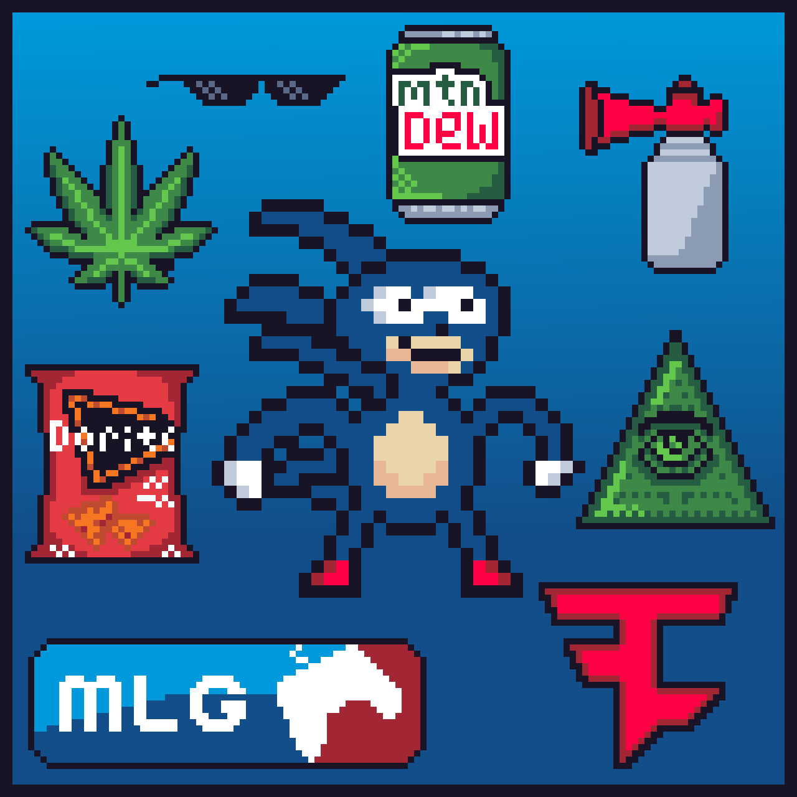
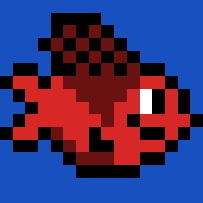
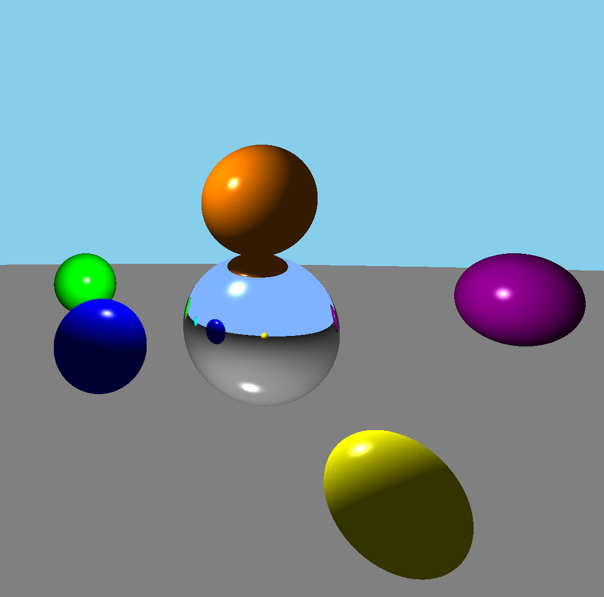
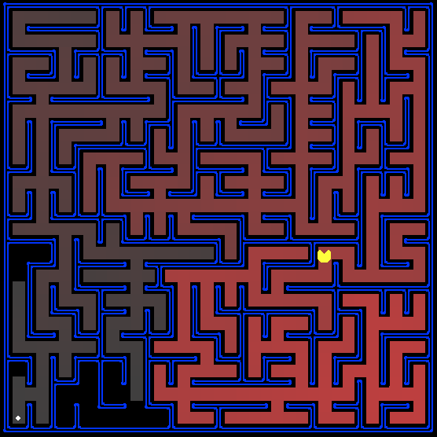
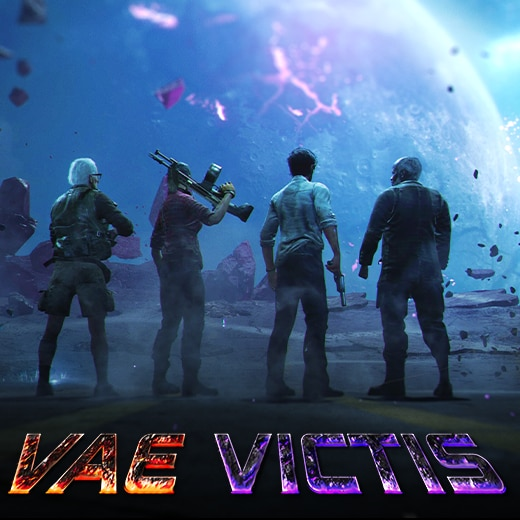
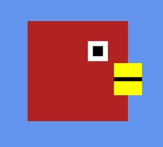
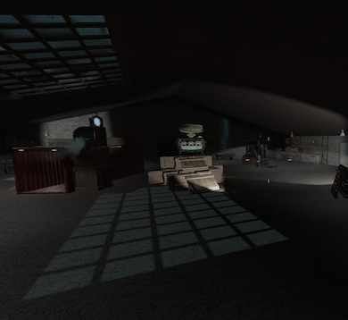
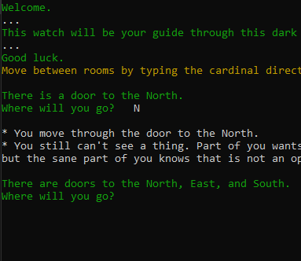
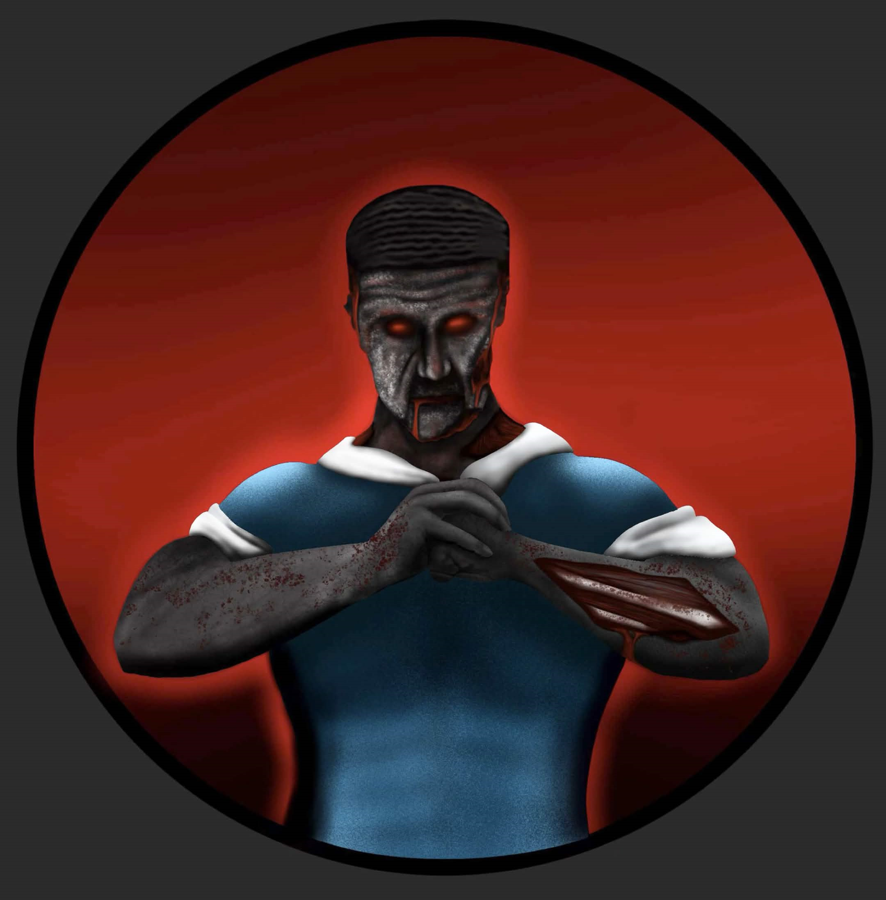

Projects

While it is a silly project, Sanic Smash Remastered is a very important one to me. This is a remake of a game created by
a friend at a summer camp we attended together in middle school, and a love letter to an era of internet culture that I grew up on.
This camp and silly project played a huge role in sparking my passion for games, so a remake was a way to pay homage to that.
This was my first fully independent project after learning Godot, where every element was created by myself with the exception of the audio assets.
Despite the silly and immature nature of the project, I am very happy with and proud of the result, and I learned a ton from the experience!

This was a small platformer I created to learn Godot. This was a modification of the popular Godot starter tutorials by Brackeys, and utilizes some assets and sounds from that project. This project was a quick one, but was a great introduction to some of the workflows involved in game development and a good way to learn the basics of the Godot engine to prepare for my own projects.
My final capstone project for my Computer Science degree was a web application for use by the university to optimize and schedule
classroom assignments in the computer science building. This application was built using Springboot with a Java backend and React (JavaScript) frontend.
We hosted this application on an Apache Tomcat webserver hosted with AWS.
This application was developed in conjunction with three of my peers, and my primary role on the project was developing a recursive scheduling algorithm that
took into account the timings of all other scheduled classes, classroom size, class sizes, and class timings to
move room assignments around to accomodate changes while mininimally impacting the current schedule. I developed this algorithm using many of the concepts
I learned from a Graph Theory course I took the previous semester.
By nature this project was one of the largest undertakings I took in school, and it was a very beneficial learning experience. This project was the closest we got
to a real world development experience, and I gained a lot of experience working on a team, presenting progress to stakeholders, creating documentation, and meeting deadlines.

As part of my Computer Graphics class, I used JavaScript to write a renderer that parses .obj 3D model files and displays them, and a ray tracer that calculates lighting
and reflection visuals for simple objects. Both of these are highly inefficient when compared to mainstream graphics frameworks such as WebGL, but writing them from scratch
massively helped me understand what rendering is actually doing. Both rendering and ray tracing are concepts prevalent in games, which made learning about them a very enjoyable experience.
Since these are written in JavaScript, both are directly linked below!

As part of my Intro to AI course in college, we utilized the UC Berkeley "Pac-Man Projects" to learn a variety of pathfinding and search algorithms.
These projects were centered on writing AI in Python for Pacman to navigate a maze to eat the dots placed around the maze while avoiding ghosts. I learned about and implemented Depth First
Search, Breadth First Search, A* Search, Minimax, and Expectimax algorithms. I also utilized Q learning to create reinforcement algorithms that would learn to solve the mazes faster over time.
Lastly, we utilized Markov models to inform a forward algorithm to account for the semi-random nature of real Pac-Man games.
I am unfortunately not permitted to share my specific code from these algorithms because the same projects are still being taught and uploading would require posting publicly available solutions.

Vae Victis is a custom map for Call of Duty Black Ops III's zombies mode intended to backport elements of future title's open world
zombies experience to Black Ops III. This project was very large in scope as the game was not designed to handle maps of this size, which required the tools to be pushed to their limits.
This project was developed using BO3's official mod tools which primarily consist of a map editor called Radiant and a C-based scripting language called GSC.
This project was a joint effort, and I was just one member of the development team. My primary role was assisting with level design by handling collision for larger imported meshes of previous
zombies locations and creating the smaller "filler" style building scattered around the map. This project taught me a lot about level design in a 3D space and was a great opportunity to develop
a larger-scale project with a team.

As part of my Intro to Game Programming class in college, I learned the fundamental mechanics behind how a game engine actually works. We spent the
semester writing a game engine from scratch in JavaScript. Our final project was to use this game engine we created in class to create two games of
our own. I created a Flappy Bird clone, and a bullet-hell style dodging game.
Creating a game engine from scratch was a unique experience that I learned a lot from. Previously, any work I had done with games relied on an engine that was
already made, which made me appreciate just how much heavy lifting was being done by said engine. While I don't see myself ever making a game with my own engine,
I do appreciate the perspective I gained from writing a very barebones one myself.

Das Lagerhaus is a custom map for Call of Duty Black Ops III's zombie mode. A precursor to my work on Vae Victis, this was a solo project intended to let me learn the
tools and scripting languages involved with creating maps. Created using Radiant for mapping and GSC for scripting (with a bit of LUA sprinkled in), this was a couple-month long
effort that really helped me understand the work that went into creating the experiences behind one of my favorite games.
This project intended to introduce me to all aspects of the mapping process, as I imported enemies, models, HUD elements, perks, player dialog, weapons, sound effects, and music. This was
my first real venture into level design, which really opened my eyes to how much thought goes into every little descision behind designing a playable space.

This was a small Text Adventure game i wrote in Python as part of my Data Structures class in univeristy. This class taught me the basics of most common data structures,
and I learned to program lists, linked lists, stacks, queues, graphs, and binary trees from scratch. The final project for this class involved creating a self-balancing binary tree
data structure and a project of our choosing that utilized any other data structure.
For the latter part, I created a short, Zork-like text adventure game that utilizes a graph data structure to create the map of the dungeon with edges representing adjacent rooms.
This project was fairly small scope, but taught me a lot about practical applications of data structures. I am also quite happy with the concept behind this game, as it utilizes the
lack of visual display to create a fun puzzle. This is a concept I still hope to explore more in the future!

This was a discord bot I wrote in Java to perform some tasks specific to my own friend group's needs. I initially created this bot
while starting college as a way to apply the programming concepts I learned in class in a more practical and enjoyable way.
This bot went
through a few iterations, and unfortunately the original source code with some of the wackier features such as playing music, playing Wordle, or
archiving images/videos has since been lost. The 2.0 iteration never reached the same scope, but the code and fuctionality is much cleaner. Overall, this was
a fun project that kept me engaged with everything I learned in my classes!